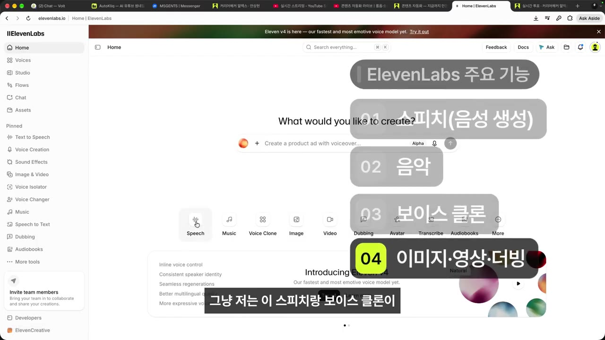
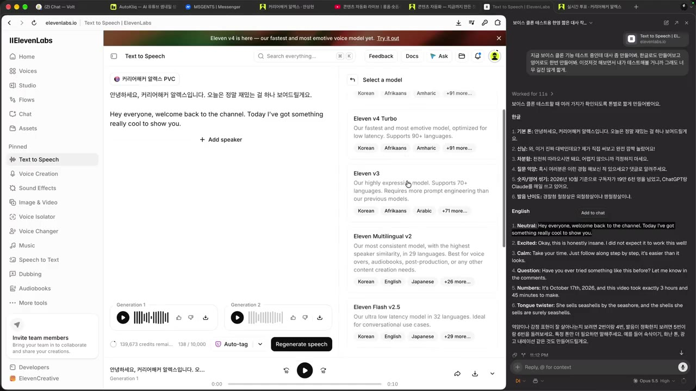
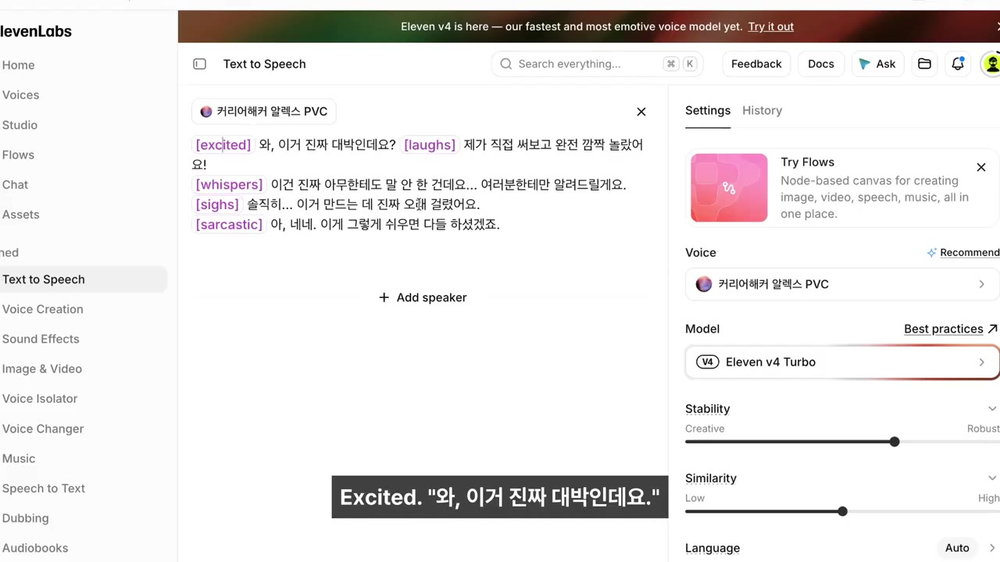
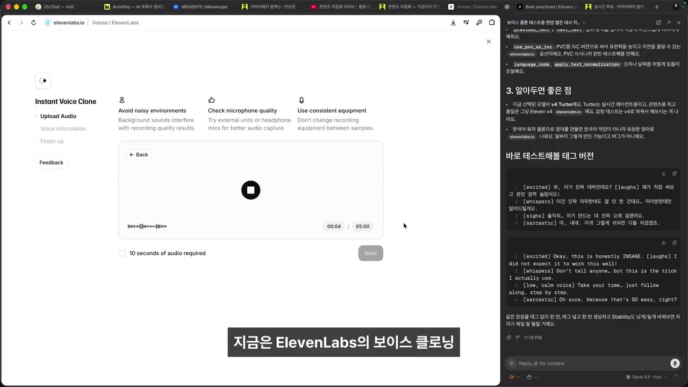
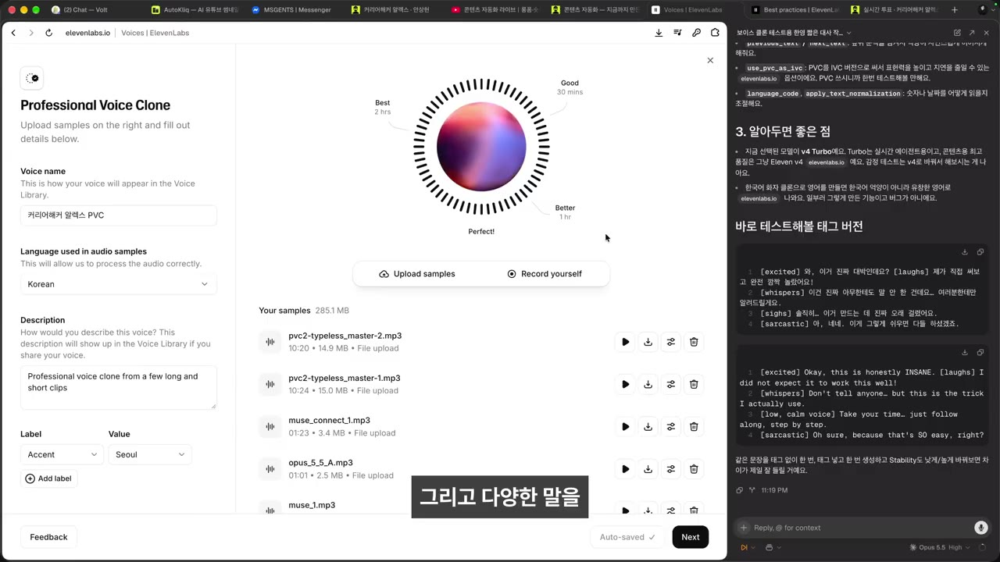

한눈에 보기
- ElevenLabs 의 새 모델 Eleven v4 는 예전 Multilingual v2 보다 억양·감정 표현이 훨씬 풍부하고, 영어는 본인보다 더 잘 읽는다는 것이 이 영상의 결론이다.
- 감정은 설정값보다 대사 안의 오디오 태그(
[laughs],[whispers]등)와 말줄임표·느낌표로 조절한다. - 40초 녹음으로 만든 즉석 복제(Instant Voice)도 약 70% 비슷하지만, 2시간 녹음으로 학습시킨 전문 복제(PVC)가 확실히 더 낫고, 그 미세한 차이가 영상 품질을 가른다.
- 전문 복제는 2시간 분량, 다양한 문장, 많은 숫자, 처음부터 끝까지 같은 톤이 조건이다. 녹음 대본은 Claude 에게 맡겼다.
- 콘텐츠 자동화의 첫 조건은 '내 목소리'다. 목소리가 신뢰·캐릭터·정체성을 만든다.
이런 분께 도움이 됩니다
- 내 목소리로 AI 내레이션을 만들어 유튜브·쇼츠 제작을 자동화하려는 크리에이터
- ElevenLabs 의 모델(v4·v2)과 복제 방식(즉석·전문) 중 무엇을 고를지 정하려는 분
핵심 내용
왜 남의 목소리가 아니라 내 목소리인가
- ElevenLabs 에는 음성 생성, 음악, 보이스 클론, 이미지·비디오, 더빙 기능과 남의 목소리 라이브러리가 있다. 핵심은 음성 생성과 보이스 클론이다.

- 라이브러리의 남의 목소리로도 대사를 만들 수 있지만, 내 목소리를 쓰는 편이 훨씬 유용하다.
- 영상보다 목소리가 더 중요할 때가 많다. 목소리가 살지 않으면 영상도 살지 않는다. (1:56)
- 들은 말: "영상이 안 좋아도 목소리가 좋은 유튜버가 망한 걸 본 적이 없다."
- 목소리는 그 사람의 신뢰·캐릭터·정체성이고, AI 가 흉내 내더라도 결국 나만의 강점이 된다. (5:40)
💡 목소리는 콘텐츠 자동화의 중심이다. 그래서 내 목소리 학습에 가장 공을 들였다.
캐릭터 감정 표현이 어렵다는 질문
- 시청자 질문: 애니메이션 캐릭터 목소리를 여러 개 써 보는데, 감정 표현을 유지하기가 어렵다.
- 알렉스도 같은 고민을 하고 있다. 직접 만든 AI 드라마(사투리 대사)를 들려 주며 목소리 때문에 결과가 아쉬웠다고 말한다. (1:12)
- 한국어 캐릭터라면 Typecast 에서 알맞은 캐릭터를 고르는 것도 방법이다. 아니면 목소리를 직접 설계해야 하는데, 그 프롬프트는 아직 연구 중이라고 한다.
Eleven v4 vs Multilingual v2
- 같은 한·영 대사("안녕하세요! 커리어 해커 알렉스입니다. 오늘은 정말 재밌는 걸 하나 보여드릴게요" / "Hey everyone! Welcome back to the channel! …")로 두 모델을 비교했다. (2:45)
- v4 는 감정 표현이 특히 좋아서 '스텝 펑션(step function, 계단식 도약)'이라고 평가한다.
| 항목 | Eleven v4 | Multilingual v2 (예전에 쓰던 모델) |
|---|---|---|
| 한국어 | 억양·감정이 풍부함 | 표현이 잘 안 됨 |
| 영어 | 매우 자연스러움(본인보다 낫다고 평가) | 갑자기 콩글리시 발음이 나옴 |
| 평가 | "정말 물건" | v4 이전에는 이것을 보통 씀 |
- 세 번째로 들려 준 버전은 '커리어 해커 알렉스' 발음이 이상했다. 설명란에는 v4 Turbo 도 비교했다고 적혀 있지만, 자막만으로는 어느 모델인지 알 수 없다(자막상 불분명). (3:40)
- 같은 대사를 본인이 직접 읽어 비교했고, 영어는 AI 가 더 잘한다고 판정했다. (4:11)

감정 태그로 연기시키기
- Aside(AI 도우미)에게 공식 Best Practices 문서를 찾아 톤·억양·감정을 조절하는 방법을 정리해 달라고 했다.
- 정리 결과: 대부분 프롬프트(대사 텍스트)로 조절하고, 따로 쓸 파라미터는 거의 없다. (6:26)
- 오디오 태그:
laughs,whispers,sighs,sarcastic,curious,excited같은 표현을 대사 앞에 태그로 붙인다.
- 오디오 태그:

- 문장 부호: 말줄임표(…)와 느낌표(!)로도 표현이 달라진다.
- 테스트 대사: "[excited] 와 이거 진짜 대박인데요? 제가 직접 써보고 완전 깜짝 놀랐어요. 이건 진짜 아무한테도 말 안 한 건데요… 솔직히 이거 만드는 데 진짜 오래 걸렸어요. 아, 네네. 이게 그렇게 쉬우면 다들 하셨겠죠." + 영어 "this is honestly insane. I did not expect it to work this well."
- 본인이 먼저 읽었지만 웃음(laughs)은 따라 하지 못했다. AI 는 태그대로 연기했다. (6:42, 7:43)
- AI 의 영어를 듣고 "영어 채널을 만들어야겠다"는 생각이 바로 들었다고 한다.
💡 태그 몇 개만 붙여도 '프로덕션 레벨'의 연기가 나온다.
즉석 복제 vs 전문 복제
- Create Voice 메뉴에서 즉석 복제(Instant Voice)는 2분이면 만든다.
- 화면에는 5분 녹음을 권한다고 나오지만 10초만 넣어도 된다고 해서, 약 30~40초를 녹음했다. (8:31)

- 저렴한 버전, 적당히 비싼 버전, 비싼 버전이 있다고 말했지만, 실제로 비교한 것은 즉석 복제와 전문 복제 두 가지다.
- 같은 감정 태그 대사로 생성해 비교했다. (9:52, 10:52)
| 항목 | 즉석 복제 (Instant Voice) | 전문 복제 (Professional Voice Clone, PVC) |
|---|---|---|
| 필요한 녹음 | 약 40초 (최소 10초) | 약 2시간 |
| 만드는 시간 | 2분 안팎 | 녹음에 큰 공이 듦 |
| 결과 | 약 70% 비슷함, "저렴 버전인데 너무 잘 나옴" | 훨씬 나음 |
| 제한 | — | 계정당 1개 (큰 비용을 내지 않는 한) |
| 비용 | — | 본인은 한 달 약 5만 원을 낸다고 함(자막상 불분명) |
💡 둘의 차이는 미세하지만, 그 미세한 차이가 영상 품질 차이를 꽤 크게 만든다.
전문 복제를 제대로 만드는 조건
- 2시간을 채운다. 2시간을 녹음하는 것 자체가 어렵다. (10:52)
- 다양한 말을 한다. 여러 문장 유형과 영어 단어·고유명사, 어려운 발음(예: "간장공장 공장장은…")을 섞는다.
- 숫자를 많이 읽는다. 1~10, 그리고 2,431이나 109,421 같은 큰 수를 많이 넣을수록 숫자 읽기 실수가 줄었다. (11:51)
- 톤·매너·스타일을 일정하게 유지한다. 그래야 일관된 결과가 나온다.
- 유튜버의 '억텐'(억지 텐션)을 2시간 내내 유지하기는 어렵다. 그래서 항상 같은 환경에서 녹음했고, 대본은 Claude 에게 만들어 달라고 했다.
- 서로 다른 날 녹음한 것(예: 메타 커넥트 발표 요약 대본)을 이어 붙여 들어 보니 톤이 들쑥날쑥해서 다시 녹음해야 했다. (13:06)
- 라이브와 쇼츠 녹음도 활용했지만, 2시간 동안 같은 톤으로 말하는 것이 은근히 어려웠다고 한다.

따라 해보기
준비물
- ElevenLabs 계정과 유료 크레딧 (설명란 기준 유료 필요, 전문 복제는 계정당 1개)
- 마이크와 조용한 녹음 환경 (전문 복제는 매번 같은 환경)
- 대사·대본을 써 줄 AI 도우미 (영상에서는 Aside 와 Claude)
- 소요 시간: 즉석 복제는 몇 분, 전문 복제는 2시간 녹음 + 여러 회차
단계별 방법
🔁 내 목소리 AI 만들기 순서
- 테스트 대사 받기
- 모델 비교
- 감정 태그 붙이기
- 즉석 복제
- 음성 생성 비교
- 전문 복제 준비
- 1테스트 대사 받기
AI 도우미에게 보이스 클론 테스트용 한·영 짧은 대사를 부탁한다 (0:58)
- 2모델 비교
같은 대사를 Eleven v4 와 Multilingual v2 로 생성해 듣고, 본인이 직접 읽은 것과도 비교한다 (2:45)
- 3감정 태그 붙이기
대사 앞에
[excited]·[laughs]·[whispers]같은 태그를, 문장 안에 …·! 를 넣어 다시 생성한다 (6:26) - 4즉석 복제
Create Voice → Instant Voice 에서 평소 말투로 30~40초를 녹음한다
- 녹음 시작 버튼 이름은 자막상 불분명
- 5음성 생성 비교
복제한 목소리로 Generate speech 를 눌러 같은 태그 대사를 만들고 비교한다
- 6전문 복제 준비
숫자·영어·어려운 발음이 들어간 대본으로 같은 톤을 유지하며 2시간 분량을 녹음해 Professional Voice Clone 에 학습시킨다
1단계에 입력할 내용 (설명란 실습 프롬프트 1/5)
○○(예: ElevenLabs)로 내 목소리 복제를 테스트할 짧은 대사를 만들어줘.
- 한국어 6줄, 영어 6줄. 줄마다 10초 안에 읽히는 1–2문장.
- 줄마다 성격을 다르게: 기본, 신남, 차분함, 질문, 숫자·영어 섞기, 어려운 발음.
- 1번 줄은 내 인사말 '○○'. 형식: 번호 목록, 줄 앞에 [성격].
완료 기준: 12줄 모두 10초 안에 읽히고 성격이 겹치지 않는다.
하지 마: 실존 인물 흉내, 광고 문구, 남의 목소리 복제를 전제로 한 대사.
3단계에 입력할 내용 (설명란 실습 프롬프트 3/5)
○○(예: ElevenLabs v4)의 공식 문서(best practices)에서 톤·억양·감정을 조절하는 방법을 찾아 정리해줘.
- 나눠서: ① 오디오 태그([laughs], [whispers] 등) ② 문장 부호(…, !) ③ 설정값.
- 항목마다 문서 링크. 못 찾은 건 '미확인', 웹 검색이 안 되면 먼저 말해줘.
- 끝으로 내 대사 ○○에 태그를 붙여 한국어·영어 테스트 버전을 만들어줘.
완료 기준: 태그 목록 + 문서 링크 + 태그 붙인 대사 2벌.
하지 마: 문서에 없는 태그 지어내기, 내 계정 로그인·결제·업로드.
4단계에 입력할 내용 (설명란 실습 프롬프트 4/5)
즉석 목소리 복제(Instant Voice Clone)에 넣을 녹음 대본을 써줘.
- 나: ○○(이름·채널), 평소 말투: ○○(예: 차분한 설명형).
- 소리 내어 읽으면 35–45초(한국어 약 200–250자).
- 평소 영상 말투 그대로, 문장 길이를 섞고 숫자 1개와 질문 1개를 넣어줘.
완료 기준: 대본 1개와 예상 읽기 시간.
하지 마: 다른 사람 목소리를 복제하기 위한 대본, 본인 동의 없는 녹음을 돕는 안내.
6단계에 입력할 내용 (설명란 실습 프롬프트 5/5, 회차마다 반복)
전문 목소리 복제(Professional Voice Clone)용 녹음 대본, 총 2시간 중 이번 회차 10분 분량(약 3,000자)을 써줘.
- 주제: ○○(내 콘텐츠), 말투: ○○. 문장 길이·종결 어미를 섞고 질문·감탄도 넣어줘.
- 숫자를 많이: 하나–열, one–ten, 2,431이나 109,421 같은 큰 수, 날짜·금액·퍼센트.
- 영어 단어·고유명사, 발음이 어려운 문장도 몇 줄. 감정 기복은 작게(2시간 같은 톤).
완료 기준: 10분 분량 대본과 숫자가 들어간 문장 수.
하지 마: 실존 인물 사칭, 전화번호·주소 같은 개인정보.
- 2단계용 블라인드 비교 채점표 프롬프트(2/5)는 영상 설명란에 있다.
따라 할 수 있는지 점검
- ✅ 바로 따라 할 수 있음: 1·3단계(프롬프트 원문이 설명란에 있음), 5단계(같은 대사로 생성해 듣고 비교)
- ⚠️ 준비물 「유료 크레딧」: 필요한 요금제와 크레딧 양이 영상에 나오지 않는다. 본인 비용 "한 달 5만 원인가?"도 불확실하다 → ElevenLabs 공식 사이트의 Pricing 페이지에서 Instant·Professional Voice Clone 이 포함된 요금제를 확인 (보충)
- ⚠️ 1·3단계 「Aside」: Aside 가 무엇이고 어떻게 설치하는지 설명이 없다 → 웹 검색이 되는 다른 AI 챗봇(Claude 등)에 같은 프롬프트를 넣어도 된다 (보충)
- ⚠️ 2단계 「모델 비교」: 모델을 고르는 메뉴의 위치를 말로 설명하지 않는다 → 영상 2:45~3:40 화면 확인
- ⚠️ 4단계 「즉석 복제」: 녹음 시작 버튼과 마이크 권한 허용 과정이 자막상 불분명하다 → 영상 8:31 화면 확인. 브라우저가 마이크 권한을 물으면 허용 (보충)
- ⚠️ 6단계 「전문 복제」: 녹음 파일 업로드, 본인 확인 절차, 학습 대기 시간은 영상에서 생략됨 → ElevenLabs 공식 문서의 Professional Voice Cloning 안내 참고 (보충)
- ❓ 저렴·적당히 비싼·비싼 세 가지 버전이 있다고 했지만 비교는 두 가지만 했다. '적당히 비싼 버전'이 무엇인지 확인이 필요하다.
- ❓ 즉석 복제 녹음 길이가 '5분 권장', '10초면 됨', '40초 녹음'으로 엇갈린다. 품질을 원하면 길게 녹음하는 편이 안전하다 (보충).
확인 방법
- 같은 태그 대사를 즉석 복제와 전문 복제(또는 v4 와 v2)로 만들어 연달아 들어 본다. 내 목소리와 얼마나 닮았는지, 숫자와 영어를 정확히 읽는지, 태그 감정(웃음·속삭임)이 드러나는지 확인한다.
- 전문 복제 녹음은 회차별 파일을 이어 들어 보고 톤 차이가 크면 다시 녹음한다.
막히면
- 한국어가 어색하면 Multilingual v2 대신 Eleven v4 를 쓴다(영상 결론).
- 감정이 밋밋하면 설정값을 찾기보다 태그와 문장 부호를 손본다. 파라미터는 거의 없다.
- 숫자를 자주 틀리면 전문 복제 녹음에 큰 수(2,431, 109,421 등)를 더 많이 넣는다.
- 결과가 들쑥날쑥하면 녹음 환경과 텐션이 회차마다 달랐는지 확인한다. 같은 세팅, 같은 톤이 핵심이다.
기억할 숫자·인용
- 즉석 복제: 녹음 약 40초 → 약 70% 비슷함, 만드는 데 2분
- 전문 복제(PVC): 녹음 약 2시간, 계정당 1개, 본인 비용 월 약 5만 원(불확실)
- 숫자 학습 예: 1~10, 2,431, 109,421
- "영상이 안 좋아도 목소리가 좋은 유튜버가 망한 걸 본 적이 없다."
- "Eleven v4 는 정말 물건이다."
생각해볼 점
- 비교는 본인 귀로 들어 본 주관적 판정이다. 블라인드 채점(설명란 프롬프트 2/5)으로 직접 확인해 보는 편이 좋다.
- 요금, 계정당 PVC 개수, 모델 이름은 2026년 10월 라이브 기준이라 바뀔 수 있다. 결제 전에 공식 사이트를 확인하자 (내 의견).
- 내 목소리 AI 는 사칭에 쓰일 위험도 있다. 본인 목소리만 복제하고, 공개 범위와 계정 보안을 함께 챙길 필요가 있다 (내 의견).
바로 해볼 일
- AI 챗봇에 설명란 프롬프트 1/5 를 넣어 내 인사말이 들어간 테스트 대사 12줄 받기
- ElevenLabs 에서 같은 대사를 Eleven v4 와 Multilingual v2 로 생성해 들어 보기
- 평소 말투로 40초를 녹음해 즉석 복제를 만들고, 감정 태그 대사로 결과 확인하기